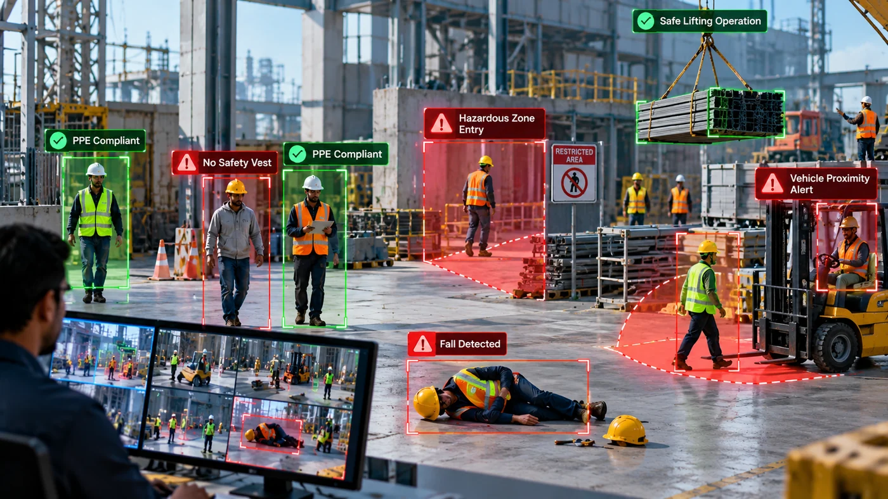
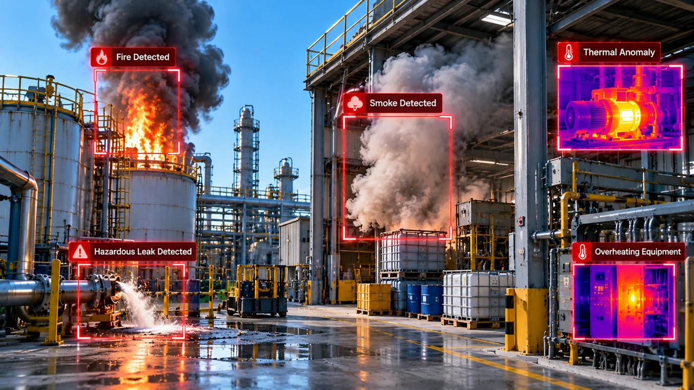
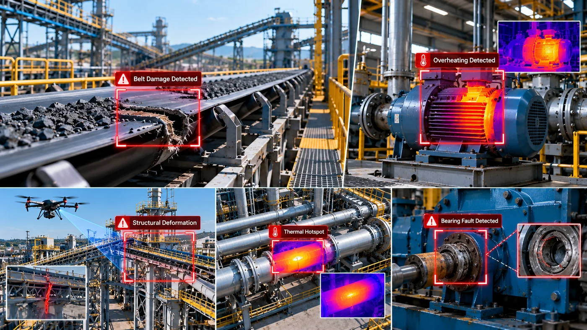
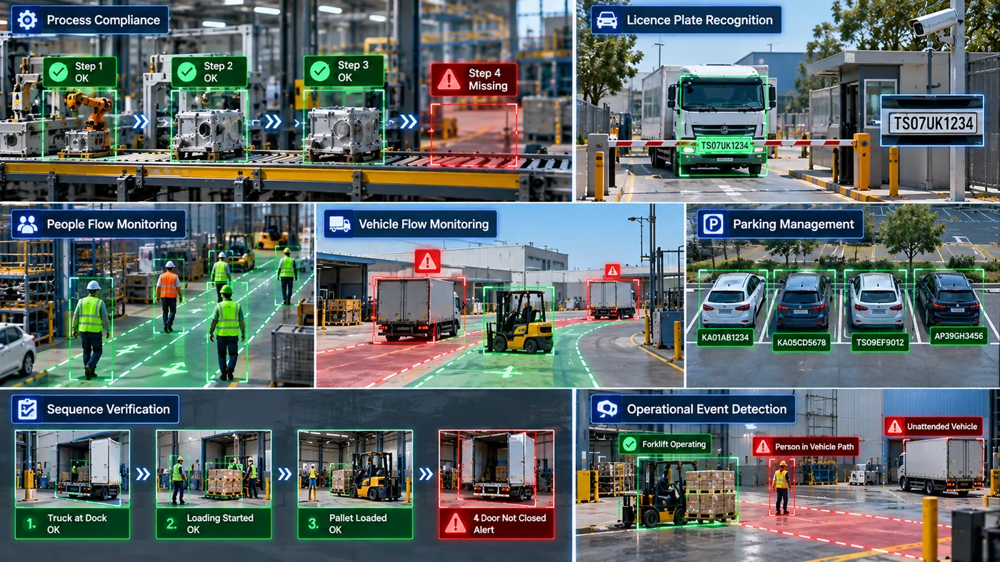

We design and build camera-based Edge AI systems that see, understand and act on site, without depending on the cloud. Each application below is engineered for the customer's environment, combining our hardware, embedded software and AI models.

01 / WORKFORCE SAFETY
Workforce Safety & Compliance
AI vision systems that keep people safe on site. They detect missing PPE and safety gear, monitor restricted and hazardous zones, and identify falls and unsafe behaviour as they happen. The same platform tracks worker presence and movement, warns of dangerous people–vehicle proximity, and supervises lifting and loading operations.
PPE Detection
Zone Monitoring
Proximity Alerts

02 / FIRE & HAZARD
Fire, Smoke & Hazard Detection
Early-warning systems that recognise fire, flame and smoke from standard and thermal cameras, often before conventional detectors respond. Thermal anomalies and other hazardous events are identified on site, triggering real-time alerts with recorded incident evidence for rapid response and investigation.
Fire & Smoke
Thermal Anomalies
Incident Evidence

03 / ASSET HEALTH
Asset & Equipment Intelligence
Continuous monitoring of machines, conveyors and infrastructure to detect problems before they cause downtime. Systems assess equipment condition, identify thermal hotspots and overheating, and detect belt damage, visual defects and deformation, using fixed cameras, thermal imaging and drones, providing early indicators for predictive maintenance.
Condition Monitoring
Thermal Hotspots
Drone Inspection

04 / OPERATIONS
Process & Operations Intelligence
Vision applications that bring visibility and control to daily operations. They monitor process compliance, verify that actions follow the correct sequence, and analyse the flow of people and vehicles. Licence plate recognition supports access and parking control, while operational events are detected and reported automatically.
Process Compliance
Licence Plate Recognition
Flow Analytics